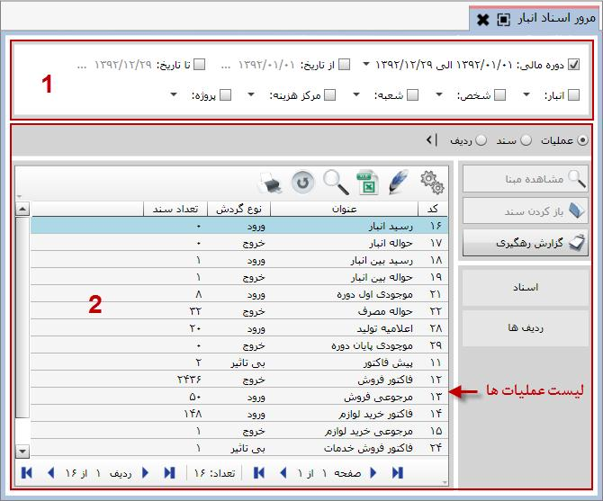

تمامی اسنادی که در سیستم انبار داری صادر می شود در این بخش قابل مشاهده است، در سر برگ این صفحه فیلترهایی وجود دارد که با استفاده از آنها می توانید گزارش ها و اسناد مورد نظر خود را مشاهده کنید، صفحه ی زیر به وسیله ی کادرهای قرمز به چهار قسمت تقسیم شده است که در ادامه به شرح هر قسمت می پردازیم :
کادر شماره 1: در کادر مشخص شده با شماره 1 تعدادی فیلتر قرار داده شده است که توسط آن ها می توانید اسناد مربوط به یک دوره مالی خاص یا یک بازه زمانی دلخواه را مشاهده نمایید. همچنین می توانید با استفاده از فیلتر های انبار، شخص، شعبه، مرکز هزینه و پروژه اسناد انبار را به تفکیک هر یک مشاهده نمایید.
کادر شماره 2: بعد از معین کردن فیلترهای مورد نظر در کادر شماره ی یک کادر شماره ی دو اسناد مورد نظرتان را نمایش می دهد.
کادر شماره 3: کادر شماره ی سه شامل کلید هایی می باشد که در زیر به شرح هر یک می پردازیم :
 : توسط این گزینه در هر سطح از مرور عملیات، اسناد و
ردیف ها که باشید می توانید از لیست موجود در جدول گزارش رهگیری تهیه نمایید.
: توسط این گزینه در هر سطح از مرور عملیات، اسناد و
ردیف ها که باشید می توانید از لیست موجود در جدول گزارش رهگیری تهیه نمایید.
در صورتی که در صفحه مربوط به لیست اسناد یا ردیف ها باشید دو دکمه دیگر فعال می گردد:
 : با انتخاب هر سند یا ردیف دلخواه و کلیک روی این گزینه، پنجره مربوط به مشاهده مبنا
(که قبلا به طور کامل توضیح داده شد) باز می شود و شما می توانید اطلاعات مربوط
به مبنای عملیاتی که مربوط به سند یا ردیف انتخاب شده است را مشاهده کنید.
: با انتخاب هر سند یا ردیف دلخواه و کلیک روی این گزینه، پنجره مربوط به مشاهده مبنا
(که قبلا به طور کامل توضیح داده شد) باز می شود و شما می توانید اطلاعات مربوط
به مبنای عملیاتی که مربوط به سند یا ردیف انتخاب شده است را مشاهده کنید.
 : با کلیک روی گزینه « باز کردن سند» فرم سند انتخاب شده
یا فرم سند مربوط به ردیف انتخاب شده باز می شود و می توانید آن را
مشاهده کنید، در صورت نیاز آن را ویرایش نموده یا هر عمل دیگری انجام دهید.
: با کلیک روی گزینه « باز کردن سند» فرم سند انتخاب شده
یا فرم سند مربوط به ردیف انتخاب شده باز می شود و می توانید آن را
مشاهده کنید، در صورت نیاز آن را ویرایش نموده یا هر عمل دیگری انجام دهید.
کاربرد کلید اسناد و ردیف در کادر شماره ی سه چیست ؟ اگر از کادر شماره ی دو یک عملیات را انتخاب کنیم سپس کلید اسناد یا ردیف را بزنیم کلیه اسناد یا ردیف های آن عملیات نمایش داده خواهد شد.
کادر شماره 4: کاربرد کلید های عملیات، ردیف و سند در کادر شماره ی چهار چیست ؟ اگر کلید عملیات را بزنیم در کادر شماره ی دو کلیه ی عملیاتی که در سیستم انبار داری صادر شده اند نمایش داده می شود، ردیف و اسناد هم عملکردشان مانند کلید عملیات است با این تفاوت که اسناد و ردیف عملیات انتخاب شده را نمایش می دهند.